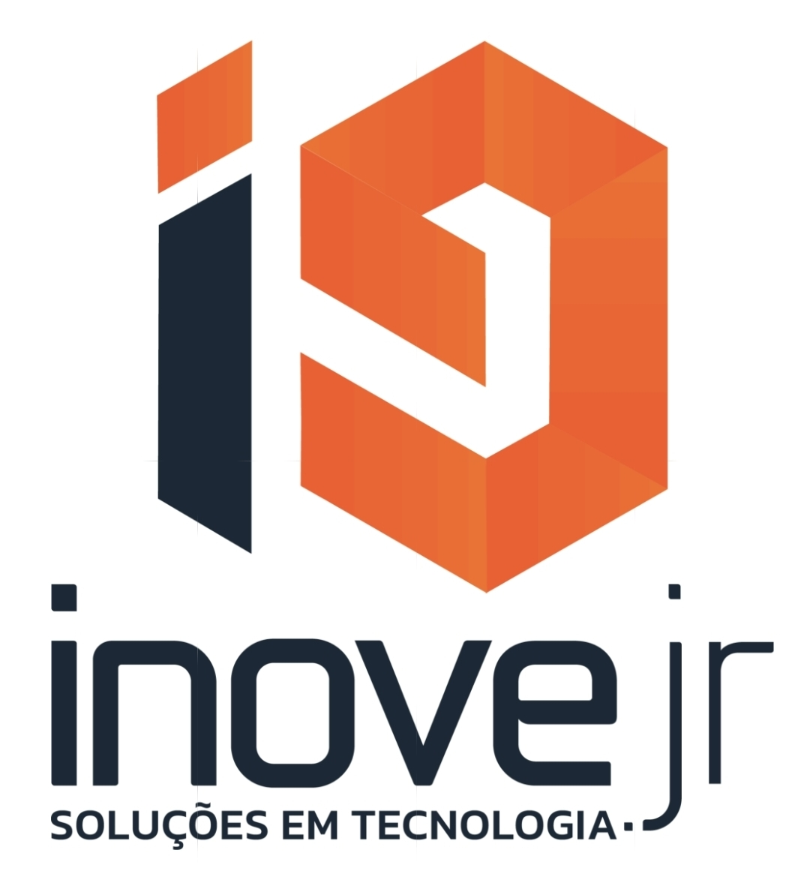
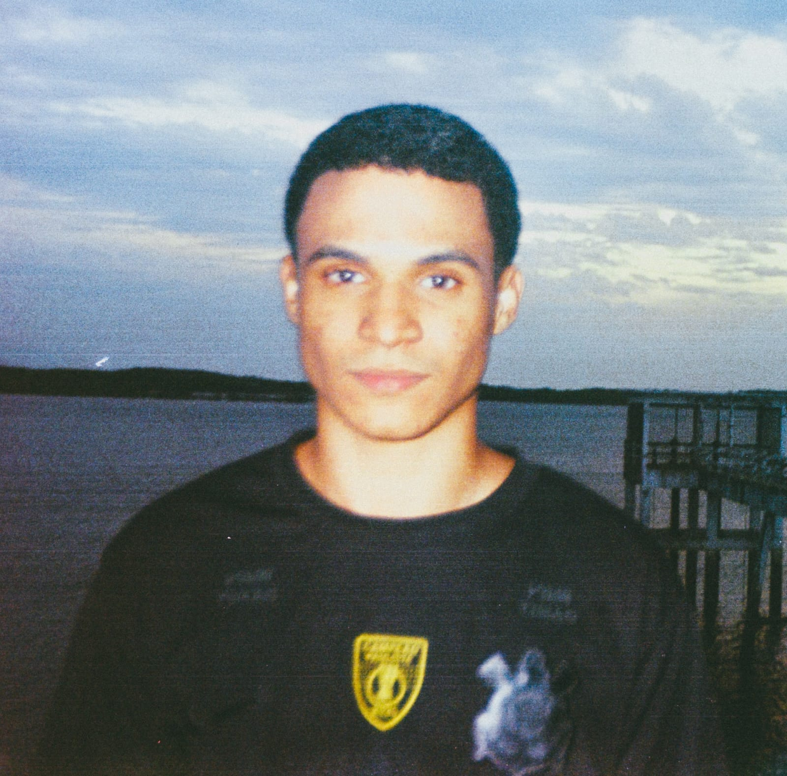

Seja bem-vindo ao meu perfil profissional estruturado em HTML.

Me chamo Kayk Calixto e sou discente de Engenharia de Computação na UNIVASF.
Abaixo estão os meus dados institucionais dentro da universidade e da empresa:
Conheci a InoveJr através do Instagram.
Decidi participar da empresa porque achei a ideia legal e promissora.
O meu início na empresa foi tranquilo, encontrando um ambiente muito acolhedor.
O meu primeiro aprendizado ou experiência mais marcante foi a primeira reunião presencial da i9.
Faço parte do setor de Marketing.
A minha função principal dentro do setor de Marketing é a edição de vídeo.
Nesta seção, divido minhas aptidões em técnicas e comportamentais:
Atualmente, tenho interesse em aprender e aprofundar meus conhecimentos em Python e Motion Design.
Meu plano principal é evoluir o máximo possível dentro do setor em que estou, possibilitando o maior aproveitamento da minha participação nos projetos da empresa.
Curto prazo: Finalizar o semestre com um bom aproveitamento.
Médio prazo: Focar em aulas sobre desenvolvimento de jogos.
Longo prazo: Concluir o curso e entrar em uma empresa de grande porte.
Como curiosidade pessoal e acadêmica, fiz um curso de robótica aos 11 anos de idade.
Agradeço a visita ao meu perfil! Sigo focado em aprender, contribuir com a InoveJr e evoluir constantemente na minha trajetória acadêmica e profissional.